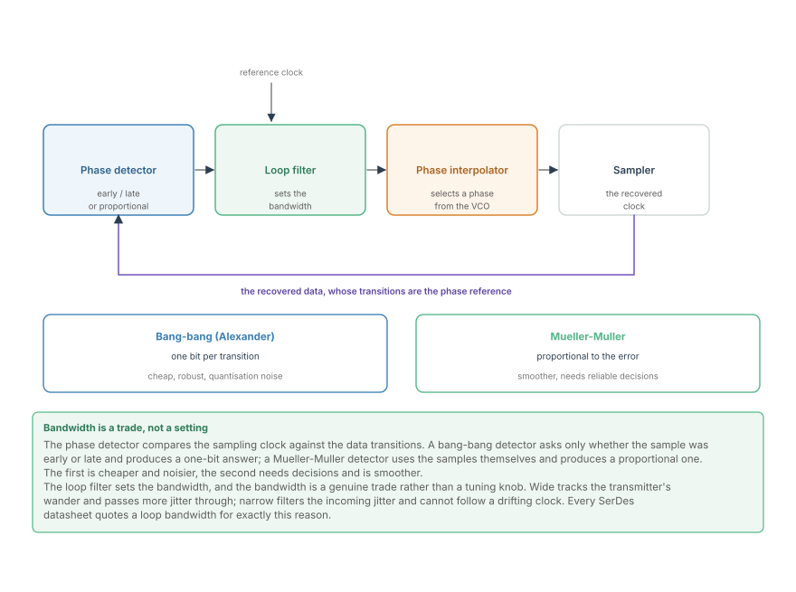
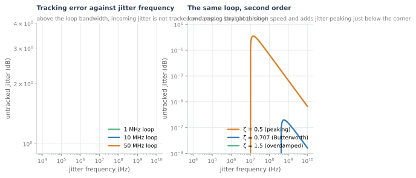
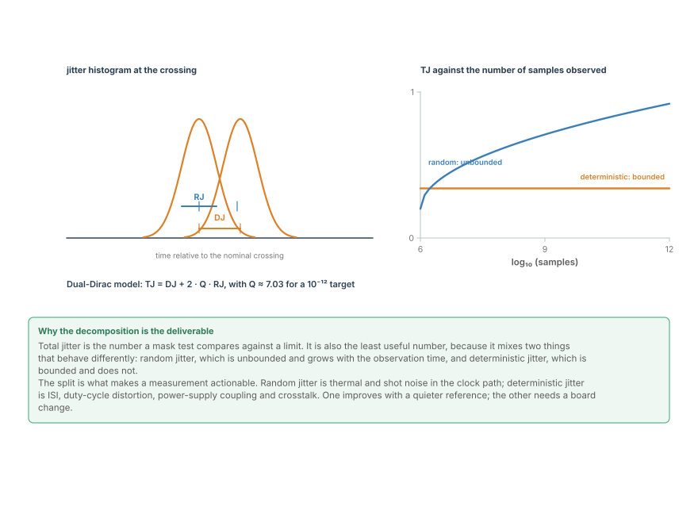
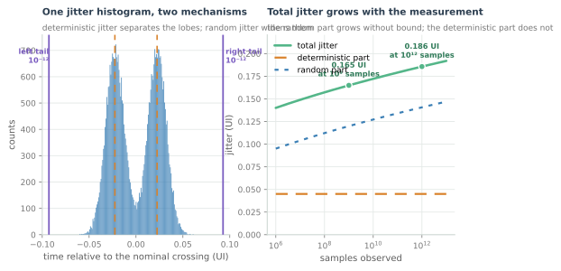

Clock Recovery and Jitter
The CDR loop, phase detectors, and the decomposition of jitter into random and deterministic parts -- the measurement that decides how much eye is left.
Every SerDes has one loop the optical DSP chain does not: an analogue clock recovery loop, closing around the sampler, whose job is to decide when to look. It is the last analogue function in the receive path, and its quality sets the horizontal margin of the eye that everything else has been working to open.
This chapter is that loop, and the measurement that decides how much of the eye is left once it has done its work.
The loop

A CDR has four parts, and each has a job worth naming.
- The phase detector compares the sampling clock against the data's transitions. It produces one number per symbol (or per transition): too early, too late, or by how much.
- The loop filter turns that stream of numbers into a control voltage or a control word. It sets the loop bandwidth, which is the design parameter that matters.
- The phase interpolator selects an output phase from a multiphase clock, which is how a modern SerDes tunes its sampling instant without moving a VCO.
- The sampler is the thing being steered.
Two phase detectors dominate, and the choice between them is a choice about cost:
- Bang-bang (Alexander) produces one bit per transition -- early or late -- and nothing more. It is cheap, needs no amplitude information, and its quantisation makes it noisy.
- Mueller-Muller uses the samples themselves and produces a value proportional to the phase error. It is smoother and needs reliable decisions to work at all.

The left panel is the fundamental behaviour: a CDR is a high-pass filter for jitter. Jitter below the loop bandwidth is tracked -- the sampler moves with it and the eye does not close. Jitter above it is not tracked and passes through to the decision, where it closes the eye horizontally.
That gives the loop bandwidth its trade, and it is a genuine trade rather than a tuning preference:
- A wide loop tracks the transmitter's wander and any low-frequency drift, which is essential if the two ends have independent clocks. It also passes more of the incoming jitter through, and it is more sensitive to its own phase detector's noise.
- A narrow loop filters incoming jitter aggressively and cannot follow a drifting clock. Too narrow, and the sampler simply loses the data.
The right panel adds the second-order detail: a real loop has a damping factor, and low damping buys acquisition speed at the cost of jitter peaking just below the corner. Peaking is a gain greater than one, so the loop amplifies jitter in a band around its own bandwidth -- which is why a loop specified only by bandwidth is under-specified.
Jitter, decomposed
The horizontal margin is measured in jitter, and total jitter is the least useful way to express it.

Total jitter is two mechanisms added together, and they behave completely differently.
Random jitter (RJ) is Gaussian and unbounded. It comes from thermal noise in the clock path, from the reference oscillator, and from the sampler's own aperture uncertainty. Its peak value depends on how long you observe: the more samples, the further into the tail you see.
Deterministic jitter (DJ) is bounded and does not grow with observation. It comes from ISI, from duty-cycle distortion in the clock, from power-supply coupling, and from crosstalk. Its worst case is a real worst case.
The dual-Dirac model ties them together, and it is the standard used in every compliance specification:

The computed figure above shows the consequence on measured data. Total jitter grows with the measurement length, and it grows without bound, because the random part does. A total jitter figure is therefore meaningless without its sample count, and comparing two measurements taken over different durations is comparing nothing.
What the split buys you
The decomposition is not bookkeeping; it is what makes the measurement actionable, because the two mechanisms have completely different fixes.
| Observation | Likely cause | Where to look |
|---|---|---|
| DJ large, RJ small | ISI, duty-cycle distortion, crosstalk | equaliser depth, clock duty cycle, layout |
| RJ large, DJ small | thermal noise, reference clock, aperture | receive front end, reference oscillator |
| Both large, TJ grows fast with sample count | a noisy clock plus a lossy channel | both, and the channel first |
| A floor that will not improve | a deterministic impairment not being averaged | pattern, reflection, power supply |
The last row is the one that wastes the most time. Averaging more samples improves the random part and does nothing to the deterministic part, so a measurement that has stopped improving is telling you the remaining jitter is deterministic -- and no amount of additional data will remove it.
Where the timing budget goes
A serial lane's horizontal budget is spent in a fixed order, and it is worth knowing which terms you can influence:
- The transmitter's own jitter, including its clock source. This is the floor, and nothing downstream can improve it.
- The channel's jitter, which is ISI expressed in the time domain. The equalisers from the previous chapter reduce it, which is why an equalised eye is wider as well as taller.
- Crosstalk-induced jitter, which moves the crossing points rather than the rails.
- The receiver's aperture uncertainty, which is the sampler's own contribution and is fixed by the silicon.
- The CDR's own residual, which is whatever the loop failed to track plus whatever peaking it added.
That is the same list as the noise budget from the previous chapter, viewed on the other axis. Vertical margin and horizontal margin are two measurements of the same impairments, and a link can be comfortable on one and marginal on the other -- which is exactly the diagnostic table this course used for the Ethernet eye diagram.
Where this connects
- The CDR is a high-pass filter for jitter: it tracks what is slow and passes what is fast.
- Loop bandwidth and peaking are separate specifications, and peaking lands where system jitter tends to be.
- Total jitter is RJ plus DJ, and only RJ grows with observation, so TJ is meaningless without a stated BER and sample count.
- The RJ/DJ split is what makes a jitter measurement actionable, because the two have different causes and different fixes.
- Horizontal margin and vertical margin are the same impairments on two axes, which is why the next chapter's error budget has to account for both.
In the optical link
There is no equivalent loop, and that changes the architecture. A coherent receiver samples with an ADC clocked by a free-running oscillator and recovers timing digitally, from the sampled signal. There is no phase interpolator steered by a bang-bang detector because there is no analogue sampling instant to steer -- timing recovery becomes a DSP block operating on the samples. Carrier phase estimation, later in the optical part, is the phase-domain cousin of this loop, and it operates on the same principle: track what is slow, filter what is fast.
Laser phase noise is the optical CDR's problem. Where a copper lane's jitter comes from ISI and clock noise, a coherent link's phase error comes largely from the transmitter and local-oscillator lasers. That is random jitter in the phase domain, and its linewidth sets the carrier recovery loop's bandwidth exactly as the reference clock sets a CDR's.
The RJ/DJ decomposition transfers unchanged. An optical link's penalty is decomposed into a random part from amplified spontaneous emission and a deterministic part from dispersion, nonlinearity and crosstalk, and the two are budgeted separately for the same reason: one averages down with more observation and the other does not. That habit -- never quote a single impairment number without its split -- is the most portable thing this chapter has to teach.